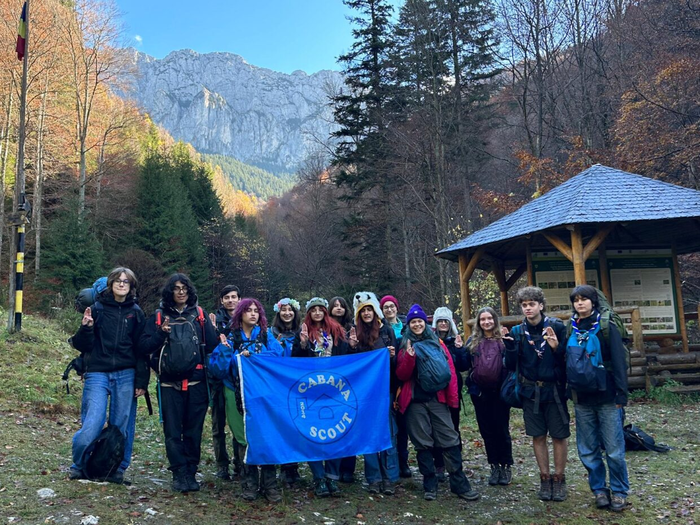
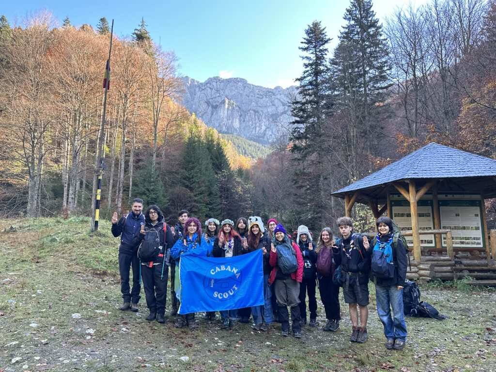
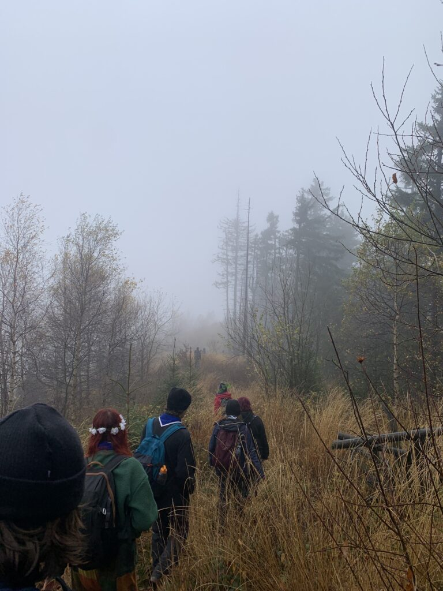
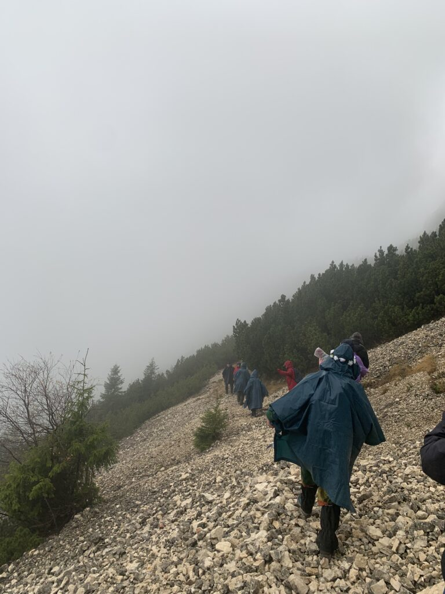
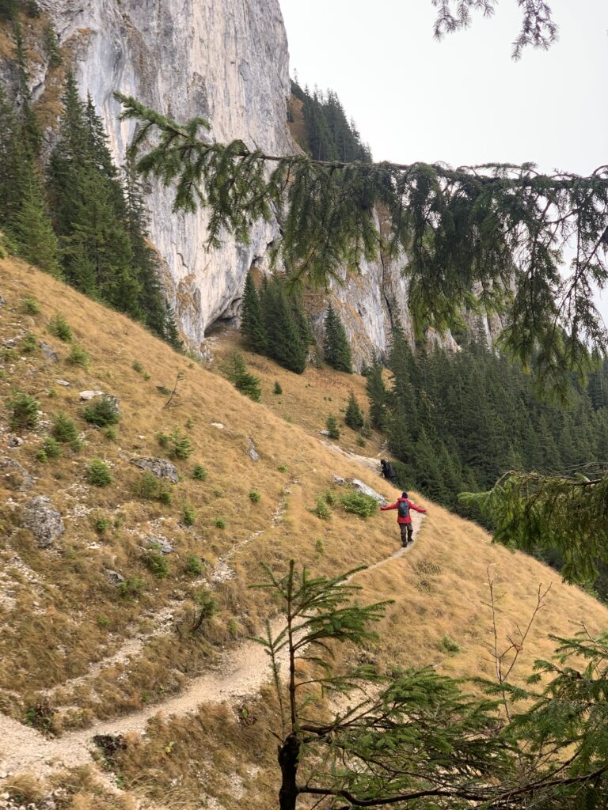
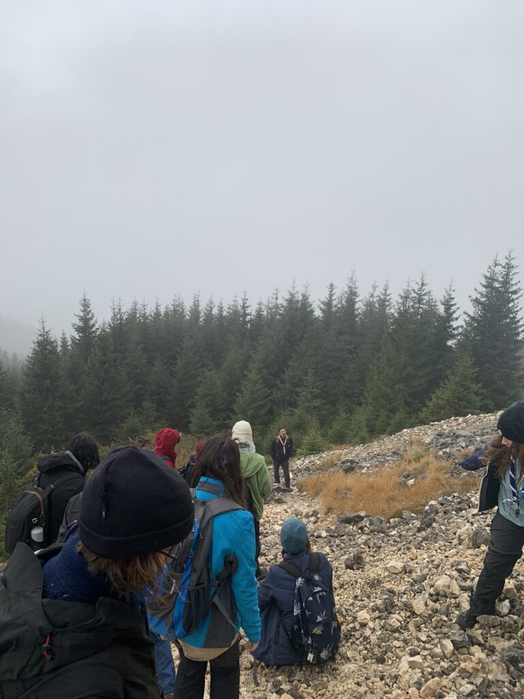
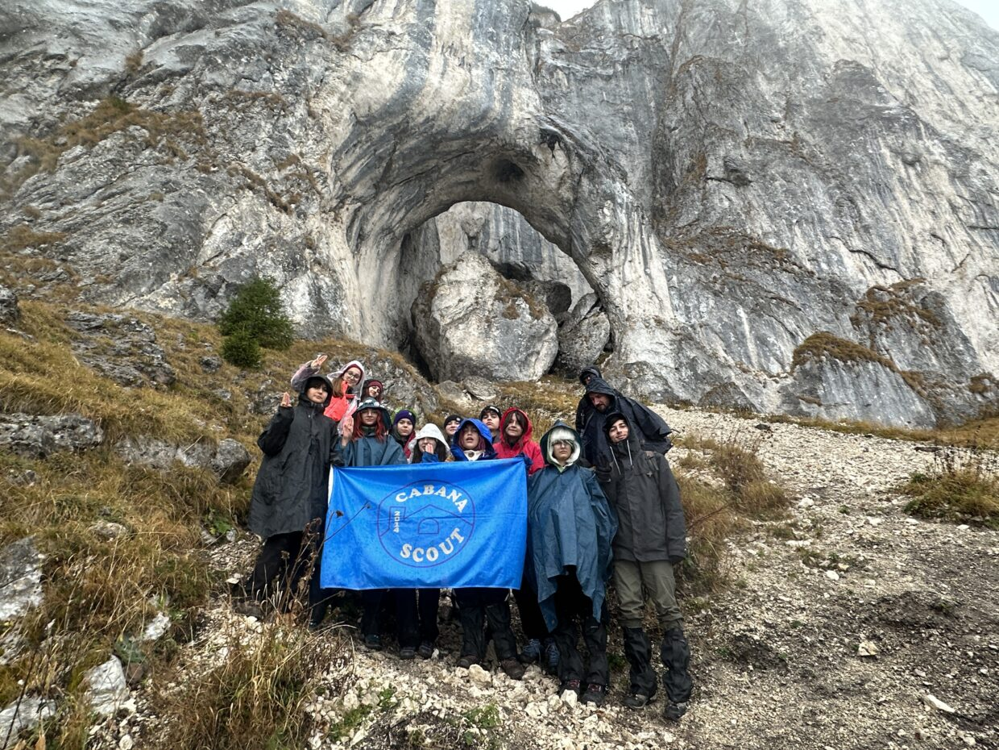
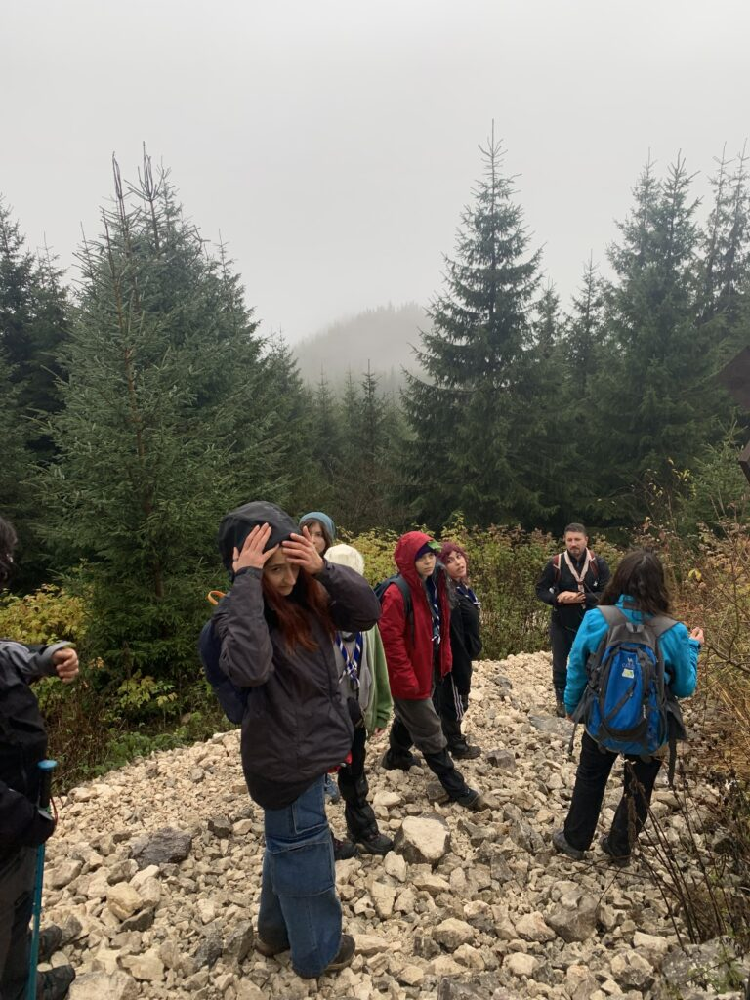
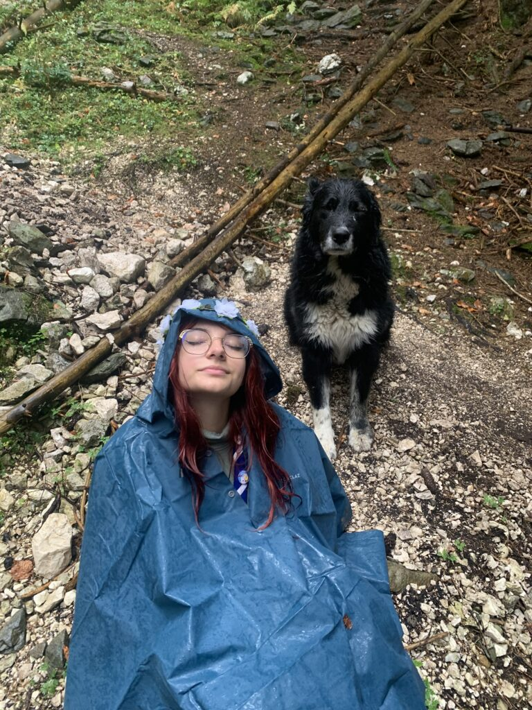

Descoperim Piatra Craiului!
Hike-ul de toamnă a fost prima ieşire din noul an cercetăşesc, unde exploratorii Cabanei Scout au plecat într-o aventură de neuitat.
Momentele petrecute în cabana care ne-a fost cămin 3 zile au fost pline de fericire şi poveste. Peisajul superb care ne înconjura şi muzica naturii a dat exploratorilor poftă de viață şi entuziasm pentru hike-ul propriu-zis, unde urma să mergem pe munții Piatra Craiului.
Drumeția a fost plină de emoții, însă susținerea pe care ne-o ofeream unii altora, cât şi susținerea liderilor noştri ne-a dat putere şi indiferență ploii şi frigului ce ne-a însoțit. Astfel am reuşit sa terminăm hike-ul in timpul propus!
Timpul pe care l-am petrecut la cabană a fost unul în care ne-am prezentat Ted talk-urile, care au fost meditate de toți şi am aflat lucruri noi din experiențele fiecaruia.
Am avut şi o încercare de a dezgropa capsula timpului, îngropata de cei care au fost în acelaşi loc în 2018, chiar daca am eşuat avem un motiv sigur pentru a ne întoarce!
Acum ajunsă acasa pot doar să îmi amintesc de acest hike ca fiind unul memorabil şi printre cele mai frumoase de până acum datorită peisajelor dar şi al oamenilor care mereu au facut cercetaşia frumoasă, mulțumesc explo!
-Maria













